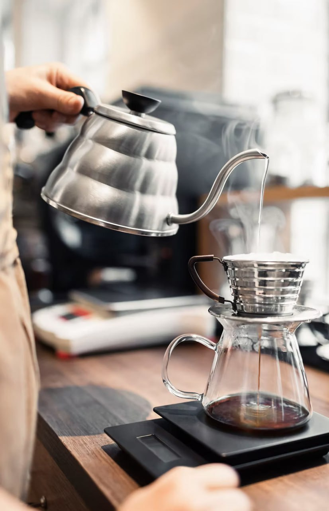
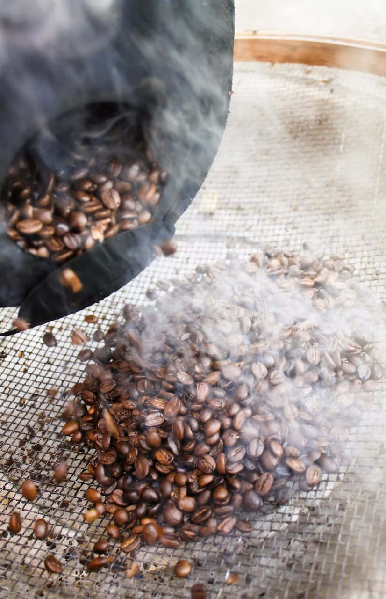

Where Coffee Meets Passion
Welcome to Online Cafe
-
Discover the World of Coffee
Delicious Artisan Coffee
Welcome to Online Cafe, where the aroma of freshly brewed coffee fills the air, and each cup tells a story of passion and craftsmanship. Our commitment to excellence is evident in every sip, as we strive to bring you the finest coffee experience. Explore our diverse selection of handcrafted blends and single-origin beans, and indulge in the rich flavors that define truly great coffee. From the first pour to the last drop, savor the moment and elevate your coffee ritual with Online Cafe.
-

Crafting Every Cup with Care
Experience Pour-over Magic
At Online Cafe, we celebrate the art of pour-over coffee, where precision meets passion in every brewing process. Our dedication to quality and freshness ensures that each pour-over cup delivers an exceptional taste that captivates your senses. Discover the nuanced profiles and aromatic notes that unfold with every pour, as our baristas skillfully pour, bloom, and extract the essence of our meticulously sourced beans. Elevate your coffee journey and experience the magic of pour-over at Online Cafe.
-

Caring for Communities
Embracing Ethical Coffee Practices
At Online Cafe, ethical coffee matters. We are dedicated to fostering sustainable relationships with coffee-growing communities and promoting fair trade practices. By prioritizing ethical sourcing and transparent partnerships, we aim to make a positive impact on the lives of farmers and the environment. With every sip of our ethically sourced coffee, you support a journey of care and responsibility. Join us in embracing the power of ethical coffee and experience the difference it makes in every cup.